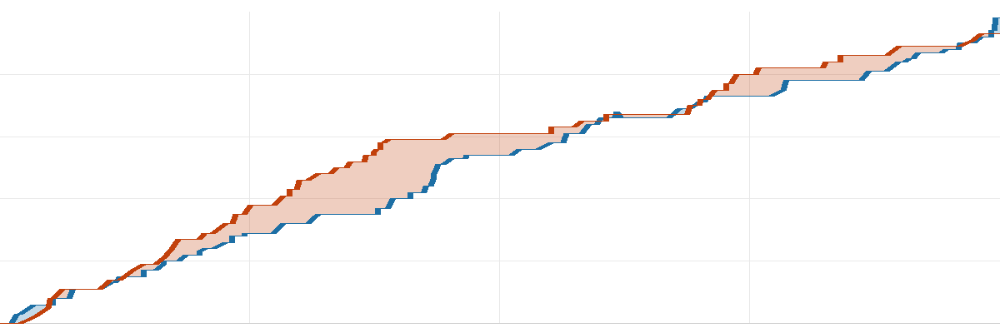

球不落·NBA 每日战报
2026-11-11美国时间
共 10 场 ｜ 每行格式：客队 比分 : 比分 主队
今天 10 场，最胶着的是凯尔特人 98-93 猛龙：交替领先 16 次，打平 4 次，直到终场分差都没超过 5 分，凯尔特人一度落后 22 分。
焦点球星5 人
库里3分0板 0助·勇士 负 火箭
东契奇32分5板 5助·湖人 胜 雄鹿
杜兰特20分4板 5助·火箭 胜 勇士
文班亚马32分9板 1助·马刺 胜 公牛
杨瀚森（未出场）开拓者 胜 雷霆
今日破纪录1 条
球队1 条
勇士 · 创下近年最长连胜· 勇士 108-115 火箭
推荐比赛7 场
夯今日最胶着
| 1 | 2 | 3 | 4 |
| 分节 | 29-38 | 25-23 | 21-19 | 23-13 |

凯尔特人猛龙横轴为比赛进程
凯尔特人一度落后 22 分，翻盘赢 5 分。
| 凯尔特人 | 塔图姆24分7板8助·德里克·怀特19分1板7助·普里查德14分1板1助 |
| 猛龙 | 贾科比·沃尔特17分3板1助·格雷夫斯13分5板·巴雷特12分8板7助 |
|
命中率 |
三分 |
篮板 |
助攻 |
失误 |
| 凯尔特人 |
41 | 35 | 45 | 22 | 18 |
| 猛龙 |
38 | 37 | 42 | 26 | 15 |
北京 08:00 开球 ｜ 凯尔特人 10-2 ｜ 猛龙 5-6
人上人值得看 · 交替领先 19 次
| 1 | 2 | 3 | 4 |
| 分节 | 29-34 | 37-25 | 19-28 | 38-21 |
魔术最多领先 16 分，最终赢 15 分。
| 魔术 | 瓦格纳38分8板1助·贝恩25分3板2助·Black22分7板8助 |
| 爵士 | 彼得森22分4板5助·森萨博19分3板1助·艾斯·贝利18分7板2助 |
|
命中率 |
三分 |
篮板 |
助攻 |
失误 |
| 魔术 |
47 | 39 | 45 | 24 | 13 |
| 爵士 |
41 | 32 | 38 | 21 | 11 |
北京 10:00 开球 ｜ 魔术 4-7 ｜ 爵士 1-11
夯今日最大逆转
| 1 | 2 | 3 | 4 |
| 分节 | 29-41 | 27-29 | 34-19 | 34-30 |
全场交替领先 8 次、打平 8 次，马刺最后阶段才拉开 5 分。
| 马刺 | 文班亚马32分9板1助·哈珀18分6板10助·福克斯17分4板9助 |
| 公牛 | 杰伦·史密斯23分4板3助·克拉克斯顿17分6板1助·凯莱布·威尔逊15分5板 |
|
命中率 |
三分 |
篮板 |
助攻 |
失误 |
| 马刺 |
50 | 38 | 33 | 32 | 6 |
| 公牛 |
58 | 52 | 40 | 33 | 19 |
北京 09:00 开球 ｜ 马刺 10-2 ｜ 公牛 1-9
人上人值得看 · 只差 10 分
| 1 | 2 | 3 | 4 |
| 分节 | 32-28 | 18-28 | 35-32 | 23-30 |
全场交替领先 11 次、打平 5 次，开拓者最后阶段才拉开 10 分。
| 雷霆 | 亚历山大31分4板2助·哈滕施泰因20分11板6助·卡鲁索14分7板2助 |
| 开拓者 | 阿夫迪亚28分3板6助·西索科19分2板·霍勒迪19分3板5助 |
|
命中率 |
三分 |
篮板 |
助攻 |
失误 |
| 雷霆 |
42 | 31 | 43 | 19 | 16 |
| 开拓者 |
46 | 39 | 39 | 21 | 18 |
北京 11:00 开球 ｜ 雷霆 8-4 ｜ 开拓者 8-3
人上人值得看 · 交替领先 12 次
| 1 | 2 | 3 | 4 |
| 分节 | 25-26 | 25-29 | 27-22 | 24-37 |
步行者最多领先 16 分，最终赢 13 分。
| 奇才 | 凯肖恩·乔治25分9板3助·安东尼·戴维斯21分13板·特雷·杨15分3板4助 |
| 步行者 | 西亚卡姆28分8板5助·祖巴茨20分12板1助·内姆哈德17分2板10助 |
|
命中率 |
三分 |
篮板 |
助攻 |
失误 |
| 奇才 |
41 | 31 | 48 | 12 | 15 |
| 步行者 |
47 | 30 | 45 | 29 | 11 |
北京 08:00 开球 ｜ 奇才 4-8 ｜ 步行者 4-8
今日最佳一球
祖巴茨 空中接力扣篮
奇才 101-114 步行者 · 第 4 节 剩 2:06
人上人今日最功亏一篑
| 1 | 2 | 3 | 4 |
| 分节 | 33-23 | 26-30 | 23-23 | 33-31 |
骑士最多领先 12 分，最终赢 8 分。
| 骑士 | 哈登32分2板4助·米切尔23分7板6助·普罗克特15分3板1助 |
| 尼克斯 | 布伦森27分3板5助·唐斯21分11板8助·麦克布莱德19分2板2助 |
|
命中率 |
三分 |
篮板 |
助攻 |
失误 |
| 骑士 |
47 | 39 | 40 | 23 | 10 |
| 尼克斯 |
49 | 36 | 34 | 33 | 12 |
北京 08:00 开球 ｜ 骑士 6-6 ｜ 尼克斯 6-5
人上人值得看 · 只差 5 分
| 1 | 2 | 3 | 4 |
| 分节 | 35-24 | 30-28 | 29-38 | 29-28 |
掘金只赢 5 分，最后时刻才定胜负。
| 掘金 | 穆雷30分4板8助·约基奇27分11板8助·卡梅隆·约翰逊23分4板3助 |
| 灰熊 | 杰伦·威尔斯22分2板1助·泰·杰罗姆22分2板5助·考沃德15分11板4助 |
|
命中率 |
三分 |
篮板 |
助攻 |
失误 |
| 掘金 |
50 | 37 | 37 | 34 | 6 |
| 灰熊 |
47 | 41 | 41 | 27 | 12 |
北京 09:00 开球 ｜ 掘金 6-4 ｜ 灰熊 7-4
其余 3 场按开球时间
拉赢 11 分，末节没缠斗
| 1 | 2 | 3 | 4 |
| 分节 | 30-28 | 31-22 | 33-23 | 29-39 |
雄鹿末节打出 39-29，但前面落后太多，最终仍差 11 分。
| 湖人 | 东契奇32分5板5助·马穆克拉什维利23分3板2助·里夫斯18分3板5助 |
| 雄鹿 | 希罗27分2板7助·哈克斯25分5板3助·库兹马9分1板1助 |
|
命中率 |
三分 |
篮板 |
助攻 |
失误 |
| 湖人 |
46 | 38 | 48 | 32 | 18 |
| 雄鹿 |
43 | 34 | 40 | 25 | 18 |
北京 09:00 开球 ｜ 湖人 11-2 ｜ 雄鹿 1-11
拉完了今日最平淡
| 1 | 2 | 3 | 4 |
| 分节 | 39-25 | 44-41 | 24-15 | 38-30 |
篮网最多领先 41 分，最终赢 34 分。
| 篮网 | 小波特22分6板3助·叶戈尔·杰明22分1板1助·兰德尔17分4板5助 |
| 鹈鹕 | 锡安29分4板2助·贝伊15分1板2助·费尔斯14分4板5助 |
|
命中率 |
三分 |
篮板 |
助攻 |
失误 |
| 篮网 |
57 | 49 | 42 | 30 | 15 |
| 鹈鹕 |
44 | 40 | 28 | 20 | 16 |
北京 09:00 开球 ｜ 篮网 3-8 ｜ 鹈鹕 4-8
NPC分差 7 分，中规中矩
| 1 | 2 | 3 | 4 |
| 分节 | 20-35 | 31-21 | 28-29 | 29-30 |
火箭最多领先 18 分，最终赢 7 分。
| 勇士 | 伦德博格25分10板·波杰姆斯基22分6板4助·克莱尔13分1板1助 |
| 火箭 | 杜兰特20分4板5助·申京19分13板9助·阿门·汤普森19分7板4助 |
|
命中率 |
三分 |
篮板 |
助攻 |
失误 |
| 勇士 |
41 | 33 | 48 | 22 | 13 |
| 火箭 |
51 | 36 | 40 | 26 | 12 |
北京 10:30 开球 ｜ 勇士 8-4 ｜ 火箭 9-3
明日焦点
独行侠@森林狼
北京时间 11月13日 09:00 ｜ 森林狼主场
NBA TV 全美直播；两边都赢得多（7胜4负 / 8胜3负）
战绩 7胜4负 / 8胜3负
另外这几场
猛龙@76人北京时间 11月13日 08:00
明天全联盟 4 场，上述是值得关注场次
球不落 ｜ 每天一份 NBA 战报，只写场上发生的事
本文基于公开赛事数据独立撰写，与 NBA 及任何转播平台无关联。
比赛日 2026-11-11（美国时间）｜ 数据来源：ESPN